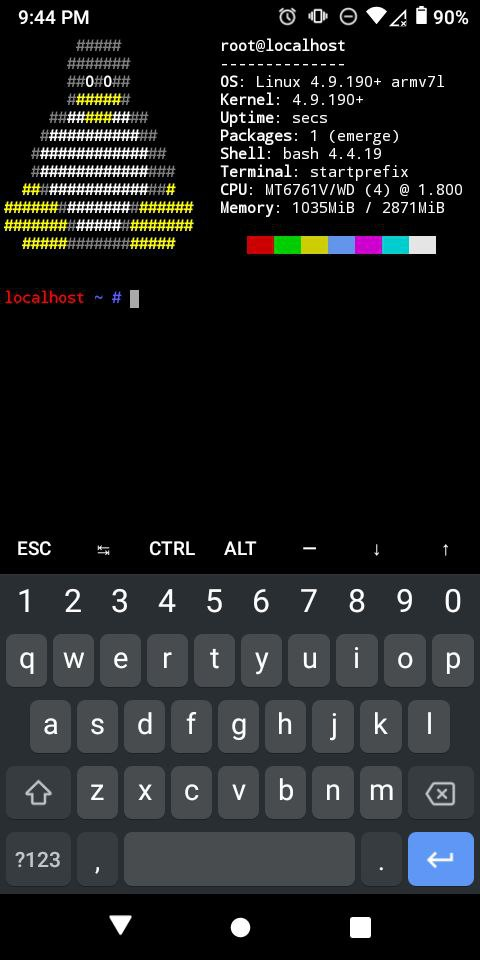
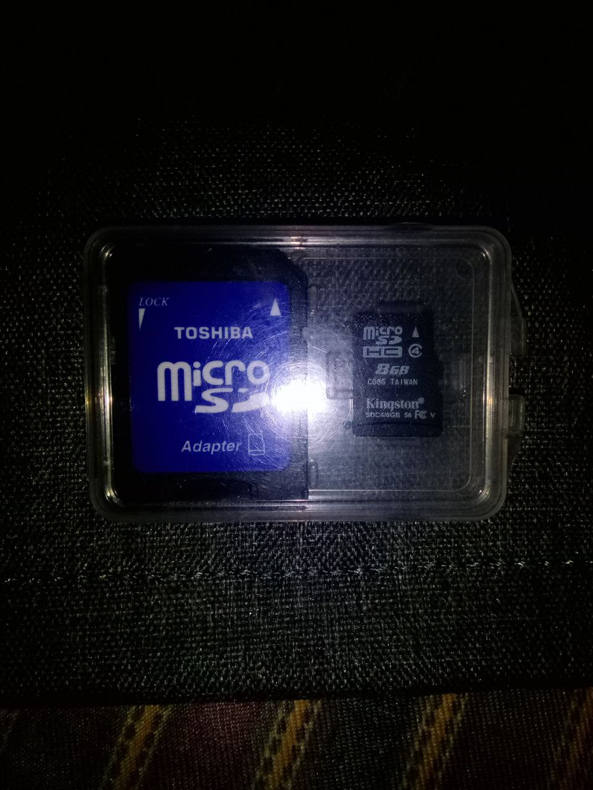

Gentoo chroot on android 10 device
I was in a pinch over the weekend and needed a quick gentoo env to test something but only had my stupid android 10 smartphone with me, so wat do? I'm documenting the following recipe that (so far) works for me and preserving the tarball here to my www for possible future needs.
Grab the stage3 for armv7 using curl inside termux.
`curl -sSL4 http://btc.info.gf/devel/gentoo/arm/android/stage3-arm64-20200704.tar.xz`
Gotta fucking fix hardlinks cuz of some android kernel herpderpery so we use proot, also from termux.
`proot --link2symlink tar -C $GENTOO/data -xf stage3-arm64-20200704.tar.xz`
Now make a script that starts up the chroot inside termux and fire it off:
`cat >chroot.sh << EOF #!/usr/bin/env bash set -eu set -o pipefail unset LD_PRELOAD export GENTOO=/data/data/com.termux/gentoo export EPREFIX=/data/gentoo64 proot --link2symlink -r $GENTOO -0 -w / \ -b /dev -b /proc -b /sys \ $EPREFIX/bin/sh -c \ "HOME=$EPREFIX/root $EPREFIX/startprefix" EOF chmod +x chroot.sh sh chroot.sh
Now from inside the chroot, fix your `/etc/resolv.conf` since this can't be copied from android system. Then source your profile and set ENV.
source /etc/profile export PS1="(chroot) $PS1"

Normally this is the step where one sets up portage, but resist the temptation to `emerge-webrsync` here. I'd simply crossdev the packages I needed on a much more capable machine and set up my `/etc/portage/make.conf` to emerge packages from a local binhost.
CAVEATS
This thing will bitch about `proc/` not being mounted on most devices. However, I'm able to see chroot processes inside htop in another termux session.
Because of the extreme minimal size of the environment, user is expected to be capable of building their own env using crossdev as explained above
UPDATE: I forgot to mention that I mounted one of these Kingston 8GB microsd cards before unpacking the fs:

Spring projects I: Gentoo distfiles mirror.
One of the more useful items I had not gotten around to mirroring is asciilifeform's historic Gentoo distfiles which is, as far as I can tell, possibly one of the only places on the internet to get these. These will now live here: http://btc.info.gf/devel/gentoo/distfiles/.
The Gentoo section of this www has suffered from a bit of neglect over the past year, and this is something I hope to remedy by this Summer. Possible upgrades will include a collection of guides for various boards, mirrors of historic .iso's (which also are getting harder to locate) and addition of various musl patches I have scattered about from past experiments.
Yet another musl trb build instructional
A recent post by DC University alumni1jfw proposed significant changes to the trb build system amongst them one that does away with the `makefile.unix` file in trb source directory. This build takes a different tack and changes next to nothing of the original structure, while still getting a statically linked bitcoind.
I started by adding a profile for my toolchain at `/etc/env.d/gcc/` and named it "x86_64-pc-linux-gnu-musl-4.9.4". Now one can switch to it any time you please using gcc-config.
# gcc-config -l [1] x86_64-pc-linux-gnu-7.3.0 [2] x86_64-pc-linux-gnu-9.2.0 [3] x86_64-pc-linux-gnu-musl-4.9.4 * <~snip~>
I choose profile 3, ensuring we use the correct toolchain.
# gcc -v gcc version 4.9.4 20160426 (for GNAT GPL 2016 20160515) (GCC)
Press trb in the same way as described on existing foundation "how-to" page, then proceed to the build directory:
v press mod6_whogaveblox trb054` `cd trb054/bitcoin/build`
Build the 3 main trb dependencies (listed as #Turds! in rotor ), much as Jacob described in his article, and installed them to the `./ourlibs` directory. I also host my own mirror the dependency artifacts on deebot here so I grabbed the necessary items:
In this directory I also put a modified version of the "rotor_bitcoin_only" script called `build.sh` that absolutely, positively *does not remove* makefile.unix. It contains:
#!/bin/sh ###################################### #Turds! OPENSSL=openssl-1.0.1g BDB=db-4.8.30 BOOST=boost_1_52_0 ###################################### TOOLCHAIN="/usr/local/x86_64-linux-musl/" DIST=$(readlink -f ./distfiles) OURLIBS=$(readlink -f ./ourlibs) #TOOLCHAIN export CC=$(readlink -f $TOOLCHAIN/bin/x86_64-linux-musl-gcc) export CXX=$(readlink -f $TOOLCHAIN/bin/x86_64-linux-musl-g++) export LD=$(readlink -f $TOOLCHAIN/bin/x86_64-linux-musl-ld) export CFLAGS=-I$(readlink -f $TOOLCHAIN/usr/include) export LDFLAGS=-L$(readlink -f .$TOOLCHAIN/usr/lib) export PATH=$PATH:$(readlink -f $TOOLCHAIN/usr/bin) #LIBS export OPENSSL_INCLUDE_PATH=$OURLIBS/include export OPENSSL_LIB_PATH=$OURLIBS/lib export BDB_INCLUDE_PATH=$OURLIBS/include export BDB_LIB_PATH=$OURLIBS/lib export BOOST_INCLUDE_PATH=$OURLIBS/include export BOOST_LIB_PATH=$OURLIBS/lib cd ../src; make STATIC=all -f makefile.unix bitcoind strip bitcoind mv bitcoind ../bin
Now run `./build.sh The output for me is a 5M statically linked trb. It took about ten minutes for me to build.
bitcoin/bin # file bitcoind bitcoind: ELF 64-bit LSB executable, x86-64, version 1 (SYSV), statically linked, stripped bitcoin/bin # echo "Size: $(du -h bitcoind)-$(ldd bitcoind)" Size: 5.0M bitcoind- not a dynamic executable
I am pleased with the results as they are on this one. Aside from the benefit of losing the tedious buildroot process, I'm choosing not to change much right now here and leave trb the fuck alone.2